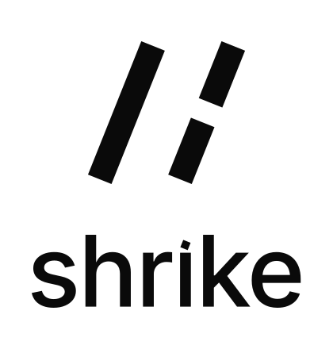
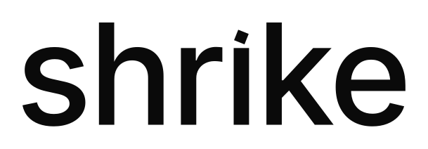
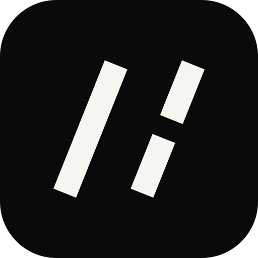
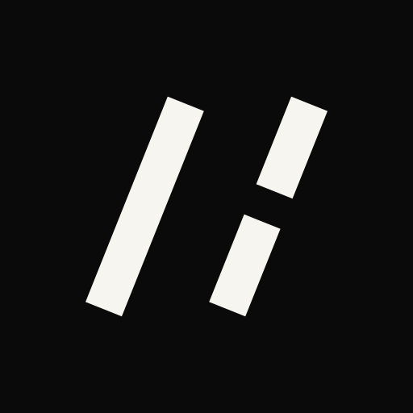

Lean
Both strokes sit on the same 2:5 rise, 21.8° from vertical. The angle is rational and repeatable.
Brand assets — 2026

Shrike deletes what agents and PRs leave behind — and proves the app still builds. The mark says it in one gesture: one path whole, one path broken, both accounted for.
01 The mark
Two strokes on the same 2:5 rise. The left runs whole. The right breaks at its midpoint — a measured cut, not an accident.
The whole stroke is the path that survives. The broken stroke is the deletion, kept in view. Both halves are equal, so the mark records a decision rather than a loss. It is three shapes and one fill; inverting it changes a colour, never the drawing.
The name is not illustrated. There is no bird, feather, beak, or eye. The identity comes from the product’s promise: remove what does not belong, and prove what remains.
Both strokes sit on the same 2:5 rise, 21.8° from vertical. The angle is rational and repeatable.
The 30-unit gap is centred on the right stroke. The remaining 87 + 87 pieces are identical.
Three shapes, one fill, no strokes. Reversing the mark is a colour change, not a redraw.
02 Logo
Ink artwork on paper. Paper artwork on ink. The inverted files carry their own ink field for cards, avatars, and embeds.




03 In use
The tight crop handles the tab. The full symbol handles the avatar. The inverted lockup handles the card.
Browser tab + page headerfavicon.ico

Shrike
Proof-carrying cleanup

App icon
512 px, radius 112
Avatar + repo headersymbol-inverted.svg
04 Guidelines
Two rules carry the system: protect the clear space, and never redraw the break.
Keep at least 1X clear on every side, where X is the width of one bar: 36 units on the 256 canvas, about 16% of the symbol’s width. At the full horizontal lockup that is roughly 31.6 px.
Below 24 px use the tight crop or the favicon. The full symbol holds from 24 px up.
#0A0A0A
#F7F5EF
Ink and paper only. No tints, gradients, or secondary brand colours. On a mid-tone, give the mark a solid ink or paper plate.
The wordmark is artwork, not live text. Set supporting copy in Inter or the system UI stack; never retype the logo.
Rotate or tilt the mark.
Stretch, squash, or outline it.
Fade, tint, or recolour it.
Retype the wordmark or change the i-dot.
Accessibility. The SVGs include a title and description. In HTML, use alt="Shrike" when the logo stands alone and alt="" when the name is already present in text. Ink on paper measures about 18:1 contrast; keep it that way.
05 Files
Vector masters, transparent raster exports, platform icons, the social card, the presentation board, and the web snippet. No webfonts, no scripts, no external dependencies.
Serving from a subpath? Adjust start_url and the icon paths in site.webmanifest. The head snippet assumes the files sit at the site root.